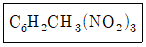
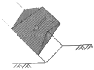
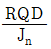
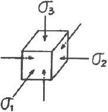
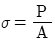
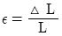
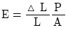
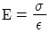
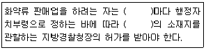

화약류관리기사 (2017-03-05 기출문제)
1과목: 일반화약학
1. 니트로글리세린 1kg이 완전 폭발할 때 발생하는 가스의 부피를 표준상태를 기준으로 구하면 약 몇 L 인가? (단, 질소의 원자량은 14이다.)
- 615
- 715
- 815
- 915
(정답률: 80%)

2. 화학계열(Explosive train)을 나타낸 것으로 옳지 못한 것은?
- 점화약-기폭약-첨장약-폭파약
- 전기뇌관-도폭선-전폭약-폭파약
- 연시약-기폭약-점화약-첨장약-폭파약
- 기폭약-점화약-발사약
(정답률: 71%)
3. 뇌관의 첨장약으로 사용되는 것은?
- 뇌홍
- 테트릴
- 염소산칼륨
- NG
(정답률: 69%)
4. 폭약의 폭속에 대한 설명으로 옳지 않은 것은?
- 일반적으로 밀도가 증가하면 사압이 없는 한 폭속은 증가한다.
- 악경이 커질수록 폭속은 점차 증가되어 일정한 값으로 전급한다.
- 밀폐도가 높을수록, 즉, 견고한 용기에 넣을수록 폭속이 빨라진다.
- 장전밀도가 일정한 경우에 폭속은 약경이나 주의의 밀폐도에 영향을 받지 않는다.
(정답률: 73%)
5. 탄광용 폭약의 폭발 온도를 낮춰 주는 물질은?
- 알루미늄 분발
- 질산칼륨
- 소금
- 염소간칼륨
(정답률: 79%)
6. 다음 중 화약류의 시험방법으로 옳은 것은?
- 폭약의 안정도를 조사하기 위하여 낙추 시험을 하였다.
- 탄광 폭약의 폭력을 평가하기 위하여 내열시험을 하였다.
- 폭속시험을 통하여 둔성폭약시험을 하였다.
- 공업뇌관의 위력을 측정하기 위하여 납판시험을 하였다.
(정답률: 84%)
7. 기폭약으로 약으로 많이 사용하는 DDNP 제조시 사용되는 주원료를 나열한 것은?
- 피크르산, NaOH, NA2S, NaNO2, HCI
- Tetryl, Na2S, NaNH2, HCI
- 피크르산, NaCl, Na2S, NaNH2, HCI
- TetryI, NaOH, K2S, NaNO2, HCI
(정답률: 72%)
8. 탄광폭약은 폭발온도와 화염(flame)을 적재하여야 하므로 감열소염제를 사용하는 재하여야 하므로감열소염제를 사용하는데, 이 때 사용되는 감열소염제는?
- NaCl
- KNO3
- HCI
- NaOH
(정답률: 88%)
9. 다음 중 화약 중 니트로화합물은?
- 니트로셀룰로오스
- 니트로글리세린
- 펜드리트
- 트리니트로톨루엔
(정답률: 85%)
10. 폭약의 파괴 효과를 결정하는 방법으로 도폭선과 납판을 사용하여 폭속을 측정하는 방법은?
- Free acid test
- Heateng test
- Hammer test
- Dautriche method
(정답률: 79%)
11. 다음 중 단위 Kg당 폭발열이 큰 것부터 작은 것 수너로 나열된 것은? (단, RDX는 헥소겐, Ng는 니트로글이콜 NG는 니트로글리세린, TNT는 트리니트 로톨루엔이다.)
- Ng＞NG＞RDX＞TNT
- RDX＞Ng＞NG＞TNT
- RDX＞NG＞Ng＞TNT
- TNT＞RDX＞Ng＞NG
(정답률: 75%)
12. ANFO 폭약 제조시 주성분 물질에 해당하는 것은?
- Ba(NO3)2
- NH4NO3
- KNO3
- K2SO4
(정답률: 80%)
13. 폭약에 알루미늄을 배합할 때 그 역할에 해당하는 것은?
- 중량제
- 안정제
- 흡수제
- 발열제
(정답률: 86%)
14. 공업용 뇌관 또는 전기뇌관에 대한 설명으로 옳은 것은?
- 공업용 뇌관에서 기폭약으로 사용하는 뇌홍폭분은 일반적으로 뇌홍 40%, 염소 산칼륨 60% 혼합물이다.
- 전기뇌관은 점화전류시험에서 0.25A의 직류 전류에서 발화하여야 한다.
- 전기뇌관의 첨장약으로 헥소겐, 펜드리트 등을 사용한다.
- LP 전기뇌관은 초시차가 1ms 미만인 것이다.
(정답률: 67%)
15. 니트로계(-NO2) 화합와약류가 아닌 것은?
- 니트로메단
- 트리니트로아니졸
- 니트로구아니딘
- 트리니 트로톨루엔
(정답률: 75%)
16. 약경이 32mm의 다이너마이트를 순폭 시험한 결과 순폭도는 12였고, 얼마 후에 다시 시험을 하였더니 최대 순폭거리가 32cm 였다. 이때 순폭도는 어떻게 되는가?
- 2 증가
- 2 감소
- 3 증가
- 3 감소
(정답률: 83%)
17. 다음 화학식은 어느 물질을 나타낸 것인가?

- 테트릴
- TNT
- 피크르산
- 펜트리트
(정답률: 58%)
18. 질산에스테르 화합물의 자연분해 원인에 해당하지 않은 것은?
- 흡습에 의한 가수분해
- 열에 의해 분해반응
- 안정제 과다 혼입한 환원반응
- 화약 속에 함유된 산에 의해 분해촉진
(정답률: 74%)
19. Nitroglycerine의 성질로 옳지 않은 것은?
- 단맛이 나는 액체이다.
- C2H5OH, C6H6 에 녹는다.
- 추운 겨울철에 동결할 우려가 있다.
- 기포를 함유한 액체는 연소ㆍ폭발하지 않는다.
(정답률: 72%)
20. 산고공급제가 아닌 것은?
- KNO3
- NaNO3
- NaCl
- KCIO3
(정답률: 86%)
2과목: 발파공학
21. 전기발파에서 뇌관을 직렬회로로 연결했을 때 회로 전부가 불발할 경우, 이에 대한 원인으로 가장 거리가 먼 것은?
- 발파기의 결선부와 모선이 접촉 불량할 때
- 발파용량이 작은 발파기를 사용할 때
- 뇌관의 각선이 단락되었을 때
- 손상되고 절단된 나쁜 발파모선을 사용할 때
(정답률: 63%)
22. 발파력 P=SWK1+ Gsinα에서 Gsinα는 무엇을 의미하는가? (단, S:절단면의 주변길이, W:전단저항선, K1:전단계수, G:파괴암석의 중량)
- 응집저항
- 파괴암석의 이동력
- 폭약의 비중
- 암석의 강도
(정답률: 54%)
23. 계단식 노천발파 시 비산의 발생을 적게 하기 위하여 고려해야 할 사항이 아닌 것은?
- 전체발파면의 전방비산
- 장약공의 장약폭발에 의한 비산
- 점화순서의 영향에 의한 비산
- 작업자 움직임에 의한 비산
(정답률: 62%)
24. 갱도굴진 발파의 주된 파괴력은?
- 전단력
- 인장력
- 압축력
- 마찰력
(정답률: 44%)
25. 장약 작업할 때에 관한 설명으로 틀린 것은?
- 전회의 발파공을 이용하여 장전하는 것이 좋다.
- 삽입봉은 마디가 없는 나무종류가 좋다.
- 화약 또는 폭약을 장전할 때에는 화기에 조심한다.
- 장전장소 및 인접장소에서는 전기용접 작업을 하지 않아야 한다.
(정답률: 64%)
26. 발파공의 직경이 Amm, 폭약의 직경이Bmm일 때 Decoupling 지수가 가장 큰 경우는?
- A=45, B=30
- A=45, B=17
- A=76, B=30
- A=76, B=40
(정답률: 52%)
27. 어떤 암석을 청공발파하여 장약량 100g으로 1.5m3의 채석량을 얻었다면, 동일한 조건에서 500g으로 얼마의 채석량을 얻을 수 있는가?
- 5.5m3
- 6.5m3
- 7.5m3
- 8.5m3
(정답률: 65%)
28. 폭약이 기폭되면 폭약 내부에서는 폭굉압이 발생하는데, 이 폭굉압과 정적 압력으로 나눌 수 있다. 이 중 정적 압력과 관계없는 것은?
- 폭발반응 생성물의 양
- 폭발반응 생성물의 상태
- 반응 속도
- 용기의 크기
(정답률: 41%)
29. 직경 30mm의 bit로 1.5m 길이를 천공하여 여러 개의 공을 제발시키려고 한다. 발파공간의 거리는 어느 정도까지 가능한가? (단, 장약량 m=12d, Ca=0.015 이다.)
- 78cm
- 92cm
- 143cm
- 152cm
(정답률: 13%)
30. 전기뇌간을 사용하는 현장에서 장약작 업전 화약류관리 보안책임자가 현장의 미주전류를 축정한 후 위험하여 작업을 중지시켰다. 미주전류의 측정치는 대략 얼마인 것으로 예상되는가?
- 0.1A
- 0.01A
- 0.001A
- 0.0001A
(정답률: 47%)
31. 발파에 의한 가옥의 피해 송산정도를 판단하는 기준으로 가옥에 미세한 크랙(crack)이 발생하고, 벽토의 붕락이 일어나는 V/C 값으로 가장 적합한 것은? (단, V/C는 Langefors가 제안한 기초지반에서의 탄성파 속도 C(km/s)에 대한 지반 진동속도 V(cm/s)의 비이다.)
- 0.6
- 1.0
- 1.4
- 3.3
(정답률: 26%)
32. 수중현수 발파 시 수중압력의 최고치를 계산하는 식으로서 옳은 것은? (단, Pm:압력최고치, W: 악량(kg), D: 폭원으로부터의 거리, K:정수, α:감쇄지수)
- Pm=K(W/D1/3)-α
- Pm=K(D/W-1/3)-α
- Pm=K(W/D)-α
- Pm=K(D/W)-α
(정답률: 45%)
33. 벤치발파에서 절리의 방향이 발파결과에 미치는 영향에 대한 설명으로 틀린 것은?
- 벤치면과 절리의 주향이 수직한 경우에는 여굴이 발생하기 쉽다.
- 벤치면과 절리의 주향이 평행한 경우에는 비교적 매끈한 발파면을 얻을 수 있다.
- 벤치면과 절리의 주향이 45°를 이루는 경우에 파쇄입도는 가장 불량하다.
- 벤치면과 절리의 주향이 평행한 경우에는 발파열 양끝단의 파쇄면이 불량하다.
(정답률: 42%)
34. 동절기에 사용하기 용이한 내한성 폭약에서 다른 폭약에 비해 함유량이 높은 물질은?
- 니트로글리세린
- 니트로글리콜
- 질산암모늄
- 과산화수소
(정답률: 59%)
35. 다음 중 누두공 시험의 문제점이 아닌 것은?
- 장약을 위한 발파공이 강선으로 작용한다.
- 실험횟수를 많게 할 필요가 있지만 실제로는 그만큼 할 수가 없다.
- 소형의 모형시험으로 대신하기에는 어려움이 있다.
- 암석 파쇄의 정도가 목적에 따라 다르다.
(정답률: 49%)
36. 벤치발파에서 H=5m, W=3m, S=4m 일 때 공당장약량을 구하면? (단, 암석계수는 0.2로 한다.)
- 12.0kg
- 1.20kg
- 1.12kg
- 120kg
(정답률: 54%)
37. 구조물 해체에 따른 다음 공법 중 기계에 의한 해체공법이 아닌 것은?
- Wheel Saw
- Wire Saw
- Steel Ball
- Water Jet
(정답률: 58%)
38. 저힝 1.5Ω인 전기뇌관 100개를 20개씩 5열로 직병렬 연결할 경우 뇌관의 총저항은 몇 Ω인가? (단, 기타 조건 등은 무시한다.)
- 6
- 12
- 60
- 300
(정답률: 61%)
39. 발파와 관련된 설명으로 옳은 것은?
- 천공비용은 암석에 따라 달라지며 공경이 클수록 단위 체적당 비용은 증가한다.
- 지반 진동을 일반적으로 변위, 입자속도, 가속도의 3성분과 주파수로 표시한다.
- 진동단위 중 속도는 mm, μ, inch로 표시된다.
- 폭약계수(e)는 어떤 특정 폭약을 기준으로 하고 강력한 폭약일수록 e값은 커진다.
(정답률: 44%)
40. 비산 방지대책으로 옳지 않은 것은?
- 발파 매트의 설치
- 방진구 설치
- 완전 전색으로 공발 방지
- 발파방법의 조절
(정답률: 59%)
3과목: 암석역학
41. 암석파괴이론 중 Griffith 수정이론에 의하면 균열의 접촉면에서 마찰계수가 1일 때, 일축압축강도는 일축인장강도의 약 몇 배인가?
- 2배
- 5배
- 8배
- 10배
(정답률: 52%)
42. 다음 그림이 나타내는 사면 파괴 형태는 무엇인가?

- 쐐기파괴
- 원호파괴
- 전도파괴
- 평면파괴
(정답률: 43%)
43. 현지암반의 변형계수 측정법이 아닌 것은?
- 공내재하시험
- 수압파쇄시험
- 압력터널시험
- 평판재하시험
(정답률: 54%)
44. 암석의 점성도(viscosity)란 무엇인가?
- 전단응력과 전단변형률(shear strain)과의 비이다.
- 전단응력과 수직변형률(normal strain)과의 비이다.
- 전단응력과 전단변형률속도(shear strain ratr)와의 비이다.
- 전단응력과 수직변형률속도(normal strain rete)와의 비이다.
(정답률: 61%)
45. 암반분류법인 Q 분류법에서

향은 암반의 구조를 나타내는 것으로, 암반블록의 크기에 대한 측정치이다. 이 때 측정치의 최대값과 최소값의 비(최대값/최소값)는 얼마인가?- 10
- 20
- 200
- 400
(정답률: 35%)
46. 슈미트(Schmidt) 햄머를 이용하여 암석의 일축압축강도를 평가하는 경우 Schmidt 반발지수와 더불어 필요한 암석의 물성은?
- 공극률
- 흡수율
- 단위중량
- 탄성파속도
(정답률: 54%)
47. 풍화작용에 대한 암석의 저항성을 측정하는 시험으로 옳은 것은?
- 흡수팽창시험
- 압력터널시험
- 슬레이크내구성시험
- 투수시험
(정답률: 60%)
48. 소성변형률이 증가함에 따라 항복응력이 커지는 현상은 무엇인가?
- 변형률경화(strain-hardening)
- 탄소성거동(elasto-plastic behavior)
- 변형률연화(strain-softening)
- 다이렌이턴시(dilatancy)
(정답률: 44%)
49. 경사방향/경사가 300/40인 절리의 방향을 주향/경사로 바르게 표시한 것은?
- N60W/40SE
- N60W/40NW
- N30E/40SE
- N30E/40NW
(정답률: 38%)
50. 지하공동의 폭이 20m, ESR이 1인 경우 등가굴착크기(Equivalent dimension)는 얼마인가?
- 0.⑤m
- 10m
- 20m
- 40m
(정답률: 56%)
51. 그림에서와 같이 지하암반에 작용하는 압축응력은 σ1=-200kg/cm2, σ2=-500kg/cm2, σ3=-1000kg/cm2, 암석의 탄성계수 4×105kg/cm2, 포아송비 0.5일 때 암석의 단위체적당 축적되는 탄성변형률 에너지는?

- 0.6kg/cm2
- 1.41kg/cm2
- 2.42kg/cm2
- 2.82kg/cm2
(정답률: 18%)
52. 길이 L, 단면적 A인 균일 단면봉의 끝단에 압축하중 P를 가하여 △L의 길이 변화가 발생하였다. 수직응력(σ), 수직변형률(ε), 영률(E)의 표현이 틀린 것은?




(정답률: 58%)
53. 다음 중 유한요소법의 장점이 아닌 것은?
- 다양한 경제조건을 부여할 수 있다.
- 불규칙한 형태의 대상도 쉽게 모델화할 수 있다.
- 대변형을 수반하는 비선형 물체의 비선형 거동도 해석할 수 있다.
- 불연속면으로 인한 큰 변위가 예측되는 문제를 해석하는데 효과적이다.
(정답률: 26%)
54. 현지암반의 탄성파 속도는 암반의 특성에 따라 달라진다. 다음 중 설명이 틀린 것은?
- 공극이 많으면 속도가 저하된다.
- 풍화가 진행되면 속도가 저하된다.
- 불연속면이 많으면 속도가 증가한다.
- 암석의 고결도가 클수록 속도가 증가한다.
(정답률: 50%)
55. 정수압 상태의 암반에 600kg/cm2의 응력이 작용하고, 탄성계수가 3×105kg/cm2, 포아송비가 0.25이면 체적 변형률은 얼마인가?
- 0.00⑤
- 0.003
- 0.0⑤
- 0.009
(정답률: 43%)
56. 어느 암석시료에 대한 직접인장실험에서 파괴시 변형률(임계변형률) εf=0.001로 나타났다. 길이 100mm의 동일한 암석시료가 인장파괴도리 때의 변형량은?
- 0.1mm
- 0.15mm
- 0.2mm
- 0.25mm
(정답률: 61%)
57. 암반의 단위중량이 깊이에 따라 선형적으로 증가하여 지표에서의 단위중량은 24kN/m3이고 심도 500m에서는 26kN/m3일 때, 심도 200m에서의 초기 수직응력의 크기는 얼마인가?
- 4800kPa
- 4880kPa
- 5000kPa
- 5200kPa
(정답률: 54%)
58. 직접전단시험의 일반적인 성질 중 틀린 것은?
- 수직응력이 커질수록 전단강도는 증가한다.
- 절리면의 거칠기가 커지면 전단강도는 커지나 전단강성은 작아진다.
- 수직응력이 커지면 전단강성은 증가한다.
- 전단강도 실험으로부터 잔류마찰각을 구할 수 있다.
(정답률: 33%)
59. 화강암 코어에 대하여 압축실험을 실시하였다. 이 때 화강암의 시료의 길이를 같게 하고, 지름을 2배로 하면 압축강도의 변화는? (단, 파괴하중은 두 경우 모두 P이다.)
- 처음 강도의 1/4로 된다.
- 처음 강도의 1/2로 된다.
- 처음 강도의 2배가 된다.
- 처음 강도의 4배가 된다.
(정답률: 49%)
60. 암석 내에 포함된 균열이 전파하기 쉬운 정도를 표현하는 값은?
- 응력확대계수
- 파괴인성
- 변형률 에너지
- 균열계수
(정답률: 52%)
4과목: 화약류 안전관리 관계 법규
61. 화약류관리보안책임자의 주소지가 변경되었을 때 할 일은?
- 15일 이내에 주소지 관할 경찰서에 신고해야 한다.
- 30일 이내에 주소지 관할 경찰서에 신고해야 한다.
- 화약류관리보안책임자면허는 지방경찰청장의 허가사항이므로 주소지 관할 지방경찰청에 30일 이내에 신고해야 한다.
- 15일 이내에 경찰청에 신고하고, 재교부를 받아야 한다.
(정답률: 50%)
62. 화약류의 사용허가를 받은 사람이 용도를 변경하여 달리 사용하였을 경우의 벌칙은? (단, 용도 변경에 따른 사용허가를 받지 않은 경우)
- 10년 이하의 징역 또는 2천만원 이하의 벌금
- 5년 이하의 징역 또는 1천만원 이하의 벌금
- 3년 이하의 징역 또는 700만원 이하의 벌금
- 2년 이하의 징역 또는 500만원 이하의 벌금
(정답률: 52%)
63. 화약류저장소 인근에서 화재나 그 밖의 위험상태가 발생하여 긴급히 조치할 필요가 있는 경우 화약류관리자의 응급조치로 옳지 않은 것은?
- 응급조치를 하고 경찰관서에 신고하여야 한다.
- 저장된 화약류를 안전한 지역에 이전할 수 있는 여유가 있는 경우에는 이전하고 감시원을 배치한다.
- 저장된 화약류를 이전할 수 있는 여유가 없는 경우에는 즉시 소각한다.
- 필요한 때에는 부근의 주민에게 대피하도록 경고한다.
(정답률: 64%)
64. 총포ㆍ도검ㆍ화약류 등의 안전관리에 관한 법률상 다음 ()에 공통적으로 알맞은 것은?

- 판매소
- 수입 장소
- 영업구역
- 제조소
(정답률: 69%)
65. 화약류 사용자는 매월의 사용상황을 관할경찰서장을 거쳐 허가관청에 언제까지 보고하여야 하는가?
- 다음달 30일까지
- 다음달 15일까지
- 다음달 7일까지
- 다음달 1일까지
(정답률: 67%)
66. 화약류저장소에 흙둑을 쌓고자 한다. 다음 설명 중 틀린 것은?
- 저장소의 바깥쪽 벽으로부터 흙둑의 안쪽 벽 밑까지 1m 이상 2m 이내의 거리를 두고 쌓아야 한다. 다만, 저장소 출입구쪽의 흙둑은 화약운반용 지게차 등이 출입할 수 있도록 1m 이상의 거리를 둘 수 있다.
- 2개 이상의 저장소가 인접하여 중간의 흙둑을 같이 사용할 때는 그 흙둑에 통로를 설치하지 아니한다.
- 흙둑을 부득이 흙담으로 하는 경우 흙담의 높이는 흙둑 높이의 1/3 이하로 한다.(단, 꽃불류 저장소 제외)
- 흙둑의 경사는 45도 이하, 정상의 폭은 1m 이상으로 한다.
(정답률: 43%)
67. 화약류를 양도 또는 양수하고자 할 때 경찰서장의 허가를 받지 않아도 되는 경우로 옳지 않은 것은?
- 제조업자가 제조할 목적으로 화약류를 양수하거나 제조한 화약류를 양도하는 경우
- 화약류의 수출입 허가를 받은 사람이 그 수출입과 관련하여 화약류를 양도ㆍ양수하는 경우
- 판매업자가 판매할 목적으로 화약류를 양도ㆍ양수하는 경우
- 화약류관리보안책임자가 현장 발파용으로 화약류를 양수하는 경우
(정답률: 63%)
68. 화약류를 운반하는 사람이 화약류운반신고 증명서의 분실을 염려하여 화약류 운반신고 증명서를 소지하지 않고 화약류를 운반하다가 적발되었을 때의 처벌은?
- 2년 이하의 징역 또는 200만원 이하의 벌금
- 1년 이하의 징역 또는 100만원 이하의 벌금
- 300만원 이하의 과태료
- 6개월 이하의 징역 또는 50만원 이하의 벌금
(정답률: 72%)
69. 지하 1급저장소의 지반의 두께가 20m일 때 저장할 수 있는 폭약량의 기준으로 맞는 것은?
- 25톤 이하
- 20톤 이하
- 19톤 이하
- 17톤 이하
(정답률: 62%)
70. 화약류취급소의 정체량으로 적합한 것은? (단, 1일 사용예정량 이하)
- 화약 400kg
- 초유폭약 500kg
- 전기뇌관 3500개
- 도폭선 7km
(정답률: 49%)
71. 대발파의 기술상의 기준으로 틀린 것은?
- 갱도의 굴진작업을 하는 때에는 그 작업에 필요한 최대량의 화약류와 여분을 함께 가지고 들어가야 한다.
- 발파의 계획과 작업은 1급 화약류관리보안 책임자가 한다.
- 약포는 약실에 밀접하게 장전하고 습기가 차지 아니도록 한다.
- 갱안에서 폭약을 운반하는 때에는 포장지가 파손되어 폭약이 흐트러지지 않도록 한다.
(정답률: 69%)
72. 화약류의 운반신고와 관련한 설명으로 옳은 것은?
- 화약류운반신고서는 특별한 사정이 없는 한 운반개시 12시간 전까지 발송지를 관할하는 경찰서장에게 제출하여야 한다.
- 화약류를 운반하지 아니하게 된 때에는 지체 없이 운반신고필증을 반납하여야 한다.
- 운반을 완료한 때에는 발송지 경찰서장에게 24시간 내에 운반신고필증을 반납하여야 한다.
- 운반신고필증을 교부한 경찰서장은 운반개시 4시간 전까지 당해 운반화약류의 운반상황을 도착지 관할 경찰서장에게 통지하여야 한다.
(정답률: 58%)
73. 꽃불류 사용의 기술상의 기준으로 옳지 않은 것은?
- 풍속이 초당 5미터 이상일 때에는 꽃불류의 사용을 중지할 것
- 쏘아 올리는 꽃불류는 20미터 이상의 높이에서 퍼지도록 할 것
- 꽃불류를 발사통 안에 넣을 때에는 끈등을 사용하여 서서히 넣을 것
- 불발된 꽃불류가 있는 때에는 지체없이 이를 회수하여 물에 넣는 등 적절한 안전조치를 할 것
(정답률: 71%)
74. 초유폭약에 의한 발파 기술상의 기준으로 틀린 것은?
- 기폭량에 적합한 적폭약을 같이 사용할 것
- 장전기는 장전작업 중에 발생하는 정전기가 소산할 수 있도록 땅에 닿게 할 것
- 금이 가고 틈이 벌어지거나 공동이 있는 천공된 구멍에는 지나치게 장약을 하는 일이 없도록 할 것
- 뇌관이 달린 폭약은 장전용호오스로 장전 후 신속히 점화할 것
(정답률: 65%)
75. 화약류를 운반할 때 적재장법과 관련된 사항으로 옳지 않은 것은?
- 화약류는 싣고자 하는 차량의 적재정량의 80퍼센트를 초과하지 않되, 이는 외장의 중량을 포함한다.
- 운반 중에 마찰 또는 동요되거나 굴러 떨어지지 아니하도록 한다.
- 발화성 또는 인화성 물질과 화약류는 동일한 차량에 함께 싣지 아니한다.
- 특별한 용기에 수납한 전기뇌관과 동일차량에 함께 실을 수 있는 폭약은 4.25톤 미만이어야 한다.
(정답률: 71%)
76. 운반신고를 하지 아니하고 운반할 수 있는 화약류의 종류 및 수량으로 옳은 것은?
- 미진동파쇄기 5000개
- 도폭선 2000m
- 폭발천공기 700개
- 장난감용 꽃불류 600kg
(정답률: 59%)
77. 1급 화약류관리보안책임자 1인은 몇 동의 화약류저장소를 관리할 수 있는가? (단, 연중 40톤 이상의 폭약을 저장하는 저장소)
- 1개동
- 2개동
- 3개동
- 4개동
(정답률: 66%)
78. 화약류를 실은 차량이 서로 주차하는 때에 앞차와 뒷차와의 거리는? (단, 법령상 최단 기준임)
- 200미터 이상
- 150미터 이상
- 100미터 이상
- 50미터 이상
(정답률: 54%)
79. 화약류 판매업자가 화약류를 도난당하였으나 신고를 하지 않았을 때(도난신고 불이행) 행정처분기준상 옳은 것은?
- 경고
- 효력정지 15일
- 효력정지 3월
- 효력정지 6월
(정답률: 60%)
80. 화약류 제조시설 기준 중 위험공실에 대한 내용으로 틀린 것은?
- 피뢰침ㆍ피뢰도선ㆍ가공지선 및 전극으로 피뢰장치를 한다.
- 창문은 감시가 용이하고 외부 침임에 대비 투명한 강화유리로 설비한다.
- 내화성 건물로 하여 별채로 한다.
- 위험공실안에는 원동기와 온도 및 습도의 조정장치를 설치하지 아니한다. 다만, 폭발 또는 불이 날 염려가 없는 경우에는 그러하지 아니하다.
(정답률: 54%)
5과목: 굴착공학
81. 타원형의 단면을 갖는 암반 터널에서 타원의 장축방향으로 작용하는 초기수직응력과 단축방향으로 작용하는 초기수평응력의 크기가 10MPa로 동일한 경우 터널의 바닥면에 발생하는 접선응력의 크기는 얼마인가? (단, 타원의 장축방향의 반경은 단축방향 반경의 2배이다.)
- 10MPa
- 20MPa
- 30MPa
- 40MPa
(정답률: 40%)
82. 다음 중 지표로부터 깊이(심도)를 고려한 연직응력의 추정 이론이 아닌 것은?
- Protodyakonov 이론
- Terzaghi 이론
- Bierbaumer 이론
- Suquet 이론
(정답률: 35%)
83. 토질사면의 전단강도를 감소시키는 요인으로 틀린 것은?
- 공급수압의 증가
- 흡수에 의한 점토지반 팽창
- 느슨한 사질토의 진동
- 건조에 의한 모관력의 증가
(정답률: 49%)
84. 건조단위중량(γd)이 2.1t/m3이고, 함수비(w)가 21%일 때, 습윤단위중량(γt)은 얼마인가?
- 2.31t/m3
- 2.42t/m3
- 2.54t/m3
- 2.65t/m3
(정답률: 56%)
85. 다음 중에서 숏크리트의 작용효과가 아닌 것은?
- 암반하중의 배분효과
- 지층간 이격효과
- 약층 보강효과
- 피복효과
(정답률: 35%)
86. 전면 접착형 록볼트의 종류가 아닌 것은?
- 모르타르 정착형
- 쐐기형
- 자천공형
- 퍼포형(Perfo-sleeve anchor)
(정답률: 33%)
87. NATM 공법에서의 시공순서가 바르게 나열된 것은?
- 천공→발파→버력처리→환기→숏크리팅→록볼팅→계기측정
- 천공→발파→환기→버력처리→숏크리팅→록볼팅→계기측정
- 천공→발파→버력처리→숏크리팅→록볼팅→환기→계기측정
- 천공→발파→록볼팅→숏크리팅→버력처리→환기→계기측정
(정답률: 47%)
88. 다음 중 1차 지보공 결정 시 고려할 사항이 아닌 것은?
- 지질조건
- 터널단면의 크기와 형상
- 굴착공법
- 숏크리트 탈락률
(정답률: 60%)
89. 세그먼트의 재질에 따른 종류가 아닌 것은?
- 세라믹 세그먼트
- 목재 세그먼트
- 덕타일 세그먼트
- RC 세그먼트
(정답률: 38%)
90. 물체의 역학적 거동을 나타내는 이상 물체 중 완전항복체를 나타내는 요소는 어느 것인가?
- Spring
- Dashpot
- Slide
- Mass
(정답률: 44%)
91. 급경사의 주상절 리가 발달한 암반사면에 발생하는 파괴 형태는?
- 전도파괴
- 평면절리파괴
- 원호파괴
- 쐐기파괴
(정답률: 58%)
92. 터널 반경반향으로 변위를 측정하여 터널 주변 이완영역을 파악하고 록볼트의 적정 길이를 판정할 목적으로 실시하는 계측법은?
- 록볼트 인발시험
- 천단침하 측정
- 지중변위 측정
- 내공변위 측정
(정답률: 36%)
93. 지하 터널굴착 시 지반의 역학적 강도 증가와 지수 및 차수효과를 동시에 적용할 목적으로 채낵하는 공법은?
- 약액주입공법
- Well Point 공법
- 물빼기 시추공법
- Deep well 공법
(정답률: 52%)
94. 퇴적암 지대에 선경사 0°인 터널 굴착시, 터널의 안정성이 가장 저하되는 층리 경사는? (단, K0=0.5이다.)
- 0°
- 30°
- 45°
- 60°
(정답률: 36%)
95. RMR이 60점인 암반의 대략적인 변형계수는?
- 10GPa
- 20GPa
- 30GPa
- 40GPa
(정답률: 27%)
96. Rankine의 토압계수에 대한 설명으로 틀린 것은?
- 수동토압계수는 주동토압계수보다 크다.
- 주동토압계수와 수동토압계수는 반비례의 관계가 있다.
- 지반의 내부마찰각만 있으면 토압계수를 계산할 수 있다.
- 주동토압계수와 수동토압계수의 곱은 1보다 크다.
(정답률: 45%)
97. Stereonet과 벡터해석법을 이용하여 터널 내에 발생하는 활동성 블록 분석 및 이에 대한 안정성을 평가하는 방법은?
- 한계평형법
- 블록해석법
- 평사투영법
- 유한요소법
(정답률: 35%)
98. 흙막이 개착공법 중 그라운드 앵커공법에 대한 일반적인 설명으로 틀린 것은?
- 굴착규모가 중규모 이하로써 평면 형상이 사각형일 때 적용되는 공법이다.
- 작업공간이 충분히 확보되며, 굴착장비의 반입이 자유로워 기계굴착이 가능하다.
- 앵커에 프리스트레스를 주기 때문에 흙막이벽의 변형을 억제하고 주변지반의 침하를 최소한으로 줄일 수 있다.
- 지하수위가 높을 경우 앵커천공으로 인한 지하수위 저하로 배면지반이 침하를 유발할 수 있다.
(정답률: 34%)
99. 터널 굴착 중 일상적으로 시행되어야 하는 시공중 조사는?
- 갱내 시추
- 터널내 탐사
- 막장 관찰
- 실내시험
(정답률: 49%)
100. 지하공간의 특성으로 틀린 것은?
- 변온성
- 기밀성
- 방음성
- 방사능 차단성
(정답률: 48%)
니트로글리세린 1kg은 몰질량으로 환산하면 약 0.0035 몰이다. 이것이 완전 폭발할 때 생성되는 N2의 몰수는 3/2 x 0.0035 = 0.0⑤25 몰이다.
이것을 표준상태인 0℃, 1 atm에서의 부피로 환산하면, PV = nRT에서 V = nRT/P = (0.0⑤25 mol) x (0.08206 L atm/mol K) x (273 K) / (1 atm) = 0.120 L = 120 mL 이다.
하지만 이것은 N2가 전부인 경우이고, 실제로는 다른 가스들도 생성되므로 더 큰 부피가 나올 것이다. 따라서 보기 중에서 가장 가까운 715가 정답이다.